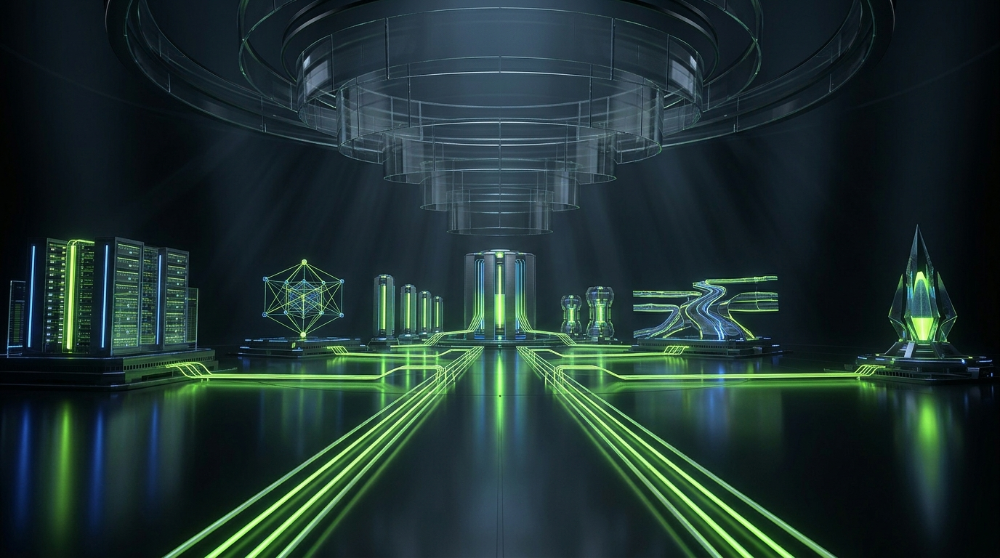
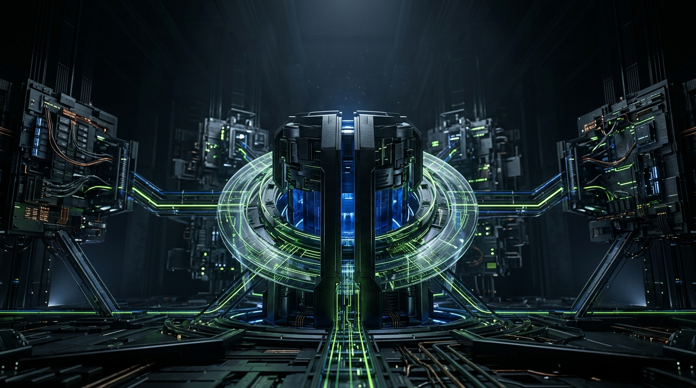
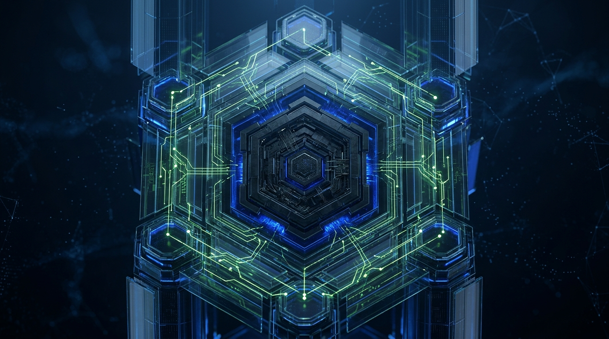
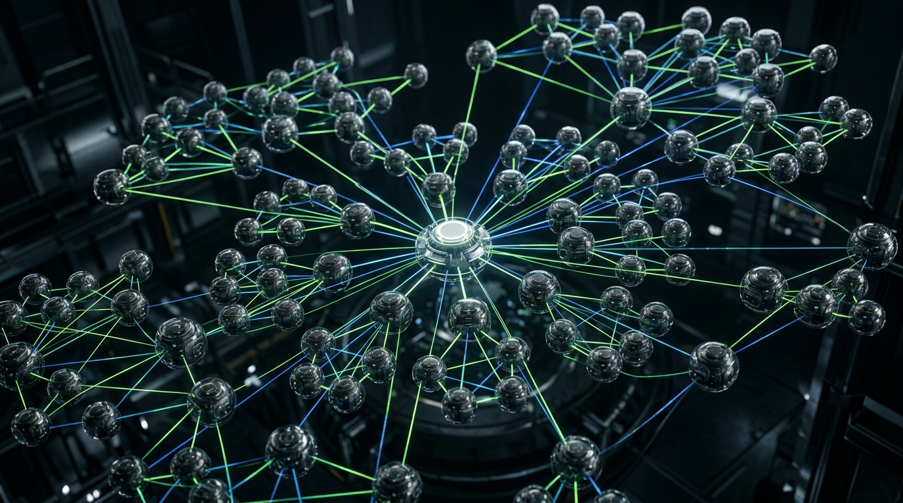

PHASE 01 // INTENT CAPTURE
Goal Payload Normalization
Operator intent is ingested, sanitized, and bound to SHA-256 byte-integrity hashes.
Coordinate agents, memory, tools and policy in one observable system.
Every motion sequence corresponds to a verified phase of the Benni OS execution architecture.
Operator intent is ingested, sanitized, and bound to SHA-256 byte-integrity hashes.
Deterministic multi-step planning with atomic checkpoints to prevent scope drift.
Task DAG dispatching with isolated background execution queues.
Multi-threaded agents invoking native tools over Model Context Protocol.
Single-use token validation returning verified Git commit evidence and MONOMO event records.
Categorized inventory across benni-os and nsfwbunny with verifiable licenses and repository statuses.
 ● Open Source (MIT)
● Open Source (MIT)
Open source MCP operator gateway for autonomous agent communication and tool execution.
 ● Open Source (MIT)
● Open Source (MIT)
AI Operator Mode execution framework and command protocol.
 ● Open Source (MIT)
● Open Source (MIT)
Hybrid GPU/CPU inference engine optimized for zero-cloud local hardware.

● Open Source (MIT)Model gateway and intelligent query router across local and remote inference targets.
 ● Open Source (MIT)
● Open Source (MIT)
Developer framework for scaffolding, testing, and deploying Model Context Protocol servers.

Public SiteLanding page for the MCP Forge playbook.
 🔒 Private Core
🔒 Private Core
NEMESIS Security Gateway enforcing HMAC payload signatures and approval tokens.

🔒 Private CoreLLM-native operating environment and agent IDE for sovereign execution.
Central master skills repository, MCP connector mappings, and swarm priority stack.
Immutable decision ledger, state engine, and cross-session memory persistence.

🔒 Private CoreAutonomous code execution engine and multi-threaded process dispatcher.
Revenue automation, browser task runner, and autonomous agent swarm engine.
Five core operational layers structuring sovereign intelligence.
Context compression, persistent vector KV, and cross-environment snapshot restore protocols.
Immutable decision log, policy gate enforcement, and single-use token verification.
Multi-threaded background processes executing discrete code tasks.
Exposes native tools over streamable SSE, Google Stitch UI synthesis, and HTTPS.
Sovereign open-source ecosystem built by operators for operators.
Connect with operators building sovereign AI infrastructure, discuss agent swarm architectures, and track open-source releases.